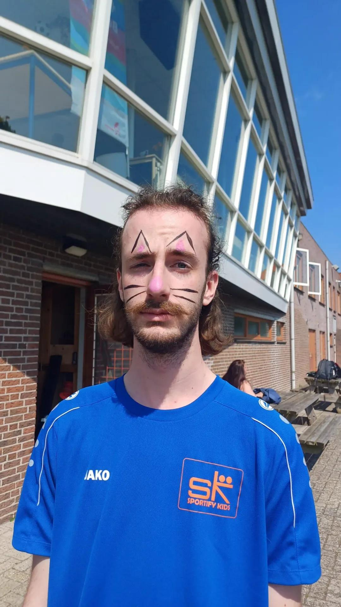

Resume
About me
My name is Ruben Post, born 23rd of may in 2003. I am looking for a job in web development.
I have experience in HTML, CSS, JS, React, .NET, Node, Web3, PostgreSQL and DApps.
The reason I started coding is because I love solving puzzles, and while coding that is one of the most important things to do.

Education
- VMBO-TL
- Secondary school in the Netherlands.
- Studied here for 4 years.
- August 2015 - June 2019.
- Teaching Assistent MBO 4
- Studied 3 years at Horizon College in the Netherlands.
- I learned everything I needed to know to start working with children.
- August 2021 - June 2024.
- Udemy course
- The Complete Full-Stack Web Development Bootcamp.
- Course by Dr. Angela Yu.
- August 2025 - .
Work experience
- Paper route
- Picked up papers from collection point, delivered them to houses.
- June 2014 - April 2015
- Deen
- Grocery store in the Netherlands.
- I stocked shelves and helped customers find and pick certain items.
- February 2016 - October 2016
- Jeroen de Vries
- Butchery store in the Netherlands
- I cleaned the entire backroom inlcuding machines.
- Helped prepare all sorts of different meats.
- November 2016 - March 2018
- Andy's Cafetaria
- Cafetaria in the Netherlands.
- Responsibilities:
- Worked the cash register.
- Served food to customers.
- Delivered food to peoples homes.
- Prepared food using the fryer, pots and pans, the grill and the oven.
- Cleaned the entire kitchen.
- Preparations for the day including:
- Making hamburgers.
- Slicing and pre-frying fries.
- Cut all the vegetables.
- Washed lettuce.
- Stocked up all the snacks.
- Stocked up bread.
- Put out the terrace.
- April 2018 - September 2024
- Sportify Kids
- After school daycare.
- Picked up children from school using a BSO-bus.
- Prepared fun indoors and outdoors activities for the children.
- Told the parents about the day when they came to pick the children up.
- I was in charge of making sure we had enough food for the week.
- Thorougly cleaned the daycare at the end of every day.
- April 2024 - Present.
Skills
- Teamwork
- Patience
- Problem solving
- Work ethic
- Technical skills:
- HTML
- CSS
- JavaScript
- React
- .NET
- Node
- Web3
- PostgreSQL
- DApps
- Github
- Visual studio code
Hobbies
Contact